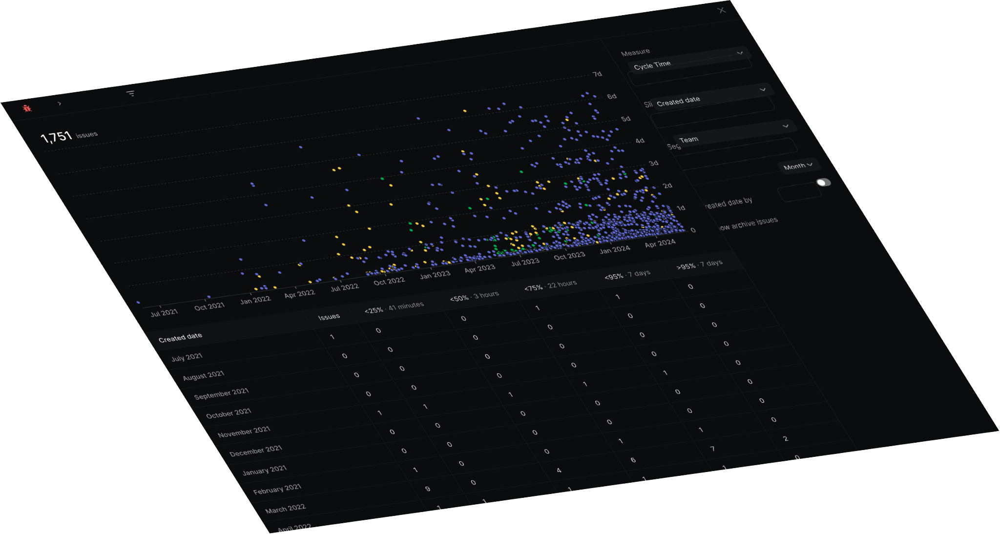

ClarityBots Launch
AI-powered traction tools for EOS®-driven teams.
Explore
Pick a Topic to Explore
SMART Rocks
Data challenge:
Setting meaningful, measurable 90-day priorities.
Example searches:
SMART Rocks examples
Quarterly Rock goals
L10 Meetings
Data challenge:
Unfocused or ineffective Level 10 meetings.
Example searches:
EOS L10 agenda
Level 10 best practices
Scorecards
Data challenge:
Inconsistent weekly metrics.
Example searches:
EOS KPI dashboard
Weekly scorecard examples
Accountability Chart
Data challenge:
Role confusion or weak ownership.
Example searches:
EOS Accountability Chart
Who owns what
Vision
Data challenge:
Team misaligned on direction.
Example searches:
VTO vision example
EOS long-term target
Execution
Data challenge:
Priorities not getting done.
Example searches:
Execute EOS Rocks
Follow-through discipline